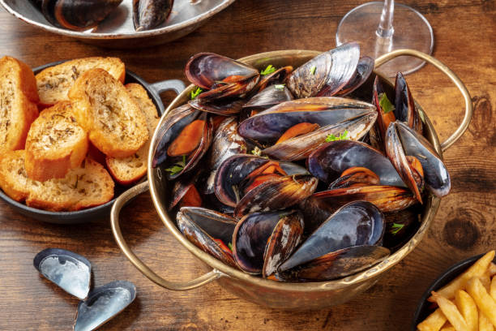
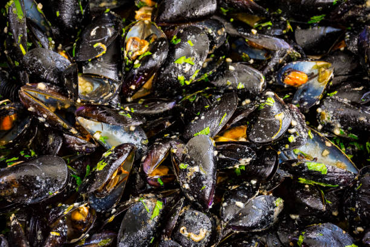
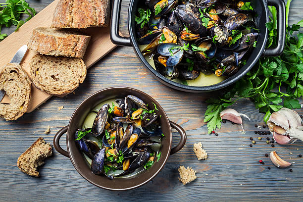
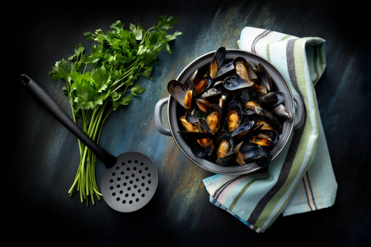

Moules Marinieres
Kort beskrivning
2022-10-25
Moules Marinieres är en klassisk rätt med blåmusslor från Frankrike. Med en perfekt smakbalans från havet, färska örter, vitt vin och grädde. Rekomenderat tillbehör är frasigt vitlöksbröd.
Visa recept ☞ Visa recept ☟
Fisk
|
Huvudrätt
|
Grytor
|
Fransk mat




Ingredienser
Beskrivning
cirka 5-6 portioner
-
1 kgKyckling
-
0.5 dlVegetabiliskolja
-
40 gTorkad chili
-
1 mskSichuanpeppar
-
8 stVitlöksklyftor
-
3 mskIngefära
-
10 stSalladslök/ vårlök
-
3.5 dlOsaltade rostade jordnötter
-
2 mskMajsmjöl
-
1.5 dlVatten
Kycklingmarinad
-
2 mskSojasås (kinesisk)
-
2 mskRödvin
-
2 mskMajsmjöl
Gong Bao sås
-
0.5 dlHonung
-
0.5 dlBalsamvinäger
-
1 mskSesamolja
-
2 mskSojasås (kinesisk)
Rekomenderat tillbehör
-
Svart ris eller svenskt matvete
- Tillaga valfritt tillbehör enligt förpackningens anvisningar (matvete behövs inte tillagas förens efter steg 7).
- Skär kycklingen i 1,5 cm bitar och lägg i en bunke med kycklingmarinad.
- Ta bort fröna från chilin och hacka 1 cm bitar.
- Hacka vårlöken till ca 1 cm bitar.
- Blanda Gong Bao såsen i en skål.
- Riv ingefära och finhacka vitlök.
- Blanda vatten och majsmjöl i en skål och ställ åt sidan.
- Värm en wok på hög temperatur och tillsätt olja, chili och sichauanpeppar några sekunder för att framhäva aromerna.
- Tillsätt kycklingen och rör om i någon minut tills kycklingen har separerats och fått stekt yta.
- Blanda i vitlök, ingefära och vårlök och fortsätt röra om till kycklingen är nästan klar.
- Rör i Gong Bao såsen och majsmjöl-vattnet.
- När såsen har tjocknat och kycklingen är klar, tillsätt jordnötterna och servera direkt.